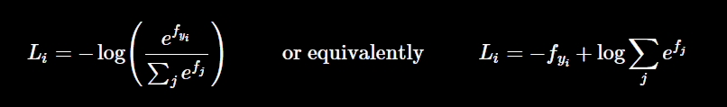
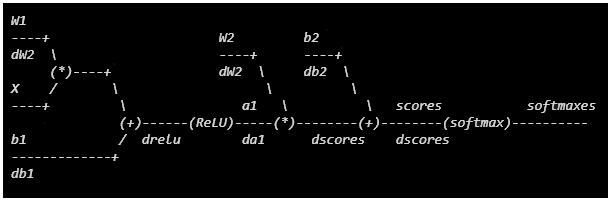
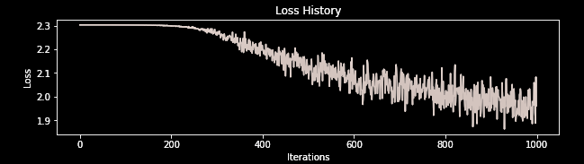
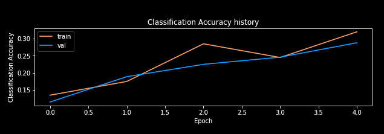
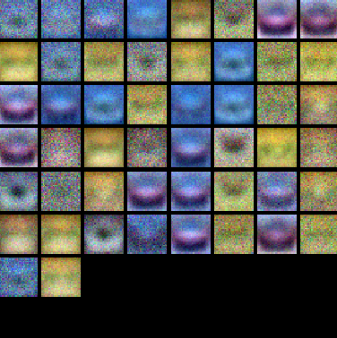
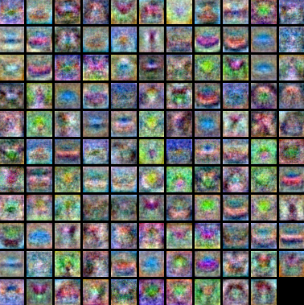

In the last post we learnt about softmax cost and layer and implemented it on a linear classifier. It did a reasonably nice job but now it's time to go a bit deeper. This time instead of a boring
linear classifier, we are going to implement a two layer neural network, i.e a neural network with one hidden layer.
Note: This is a blog shows the implementation of cs231n assignment 1, TwoLayerNet Section. The notes for this assignment involves various topics namely, softmax and backpropagation.
Link for the notes is here. And you should also download the Jupyter Notebook for this assignment. To make this work download the assignment zip file from the link I provided above and put this in the main folder. Also you'll have to get the CIFAR10 dataset batch files from here.
Loss And Grads
We are going to implement a simple feedforward neural network which
will have just one hidden layer. In this network we'll be using softmax loss function which is basically a crossentropy loss function with a softmax activation function for the final layer of the neural network. This helps to generate scores for the classes as normalized probablities which are very handy to interpret.
For calculating loss, the first thing we'll have to do is to perform a forward pass. We have done forward pass quite a few times in previous exercises and should be pretty easy to understand. Below is the code I have used for forward pass in the Jupyter Notebook.
Now, after the forward pass we'll want to calculate the loss for the
scores which were calculated during the forward pass. The softmax loss function is defined as this,

We are going to do a vectorized implementation of this loss function. It's implementation is actually pretty straightforward
and if you are having any trouble understanding it, go to my previous post on softmax image classifier and try to understand the both naive (using for loops) and vectorized implementations of loss and grads. Below is the code for implementing vectorized loss.
We have our cost function ready. And now, we would like to obtain some nice parameters i.e. weights and biases which will provide us the minimum value of the cost function. There are many approaches which can be used to obtain these desired parameters. The one that best works and is gradient descent. We will implement a special variant of gradient descent called mini-batch gradient descent. You can read more about gradient descent and its type in my this blog post.
So Gradient Descent calculates gradient calculates gradient of the cost function i.e a vector of partial derivatives w.r.t. all its parameters. And then we take small steps in the direction of steepest descent provided by gradients. To calculate the gradients, an algorithm called backpropagation is used. Backpropagation has gained quite a reputaion for being notoriously difficult to understand but Andrej Karpathy sums it best in one line, it's just the recursive implementation of Calculus' chain rule. Detailed notes backpopagation can be found from the cs231n course websites.
Here, I'll sum up the implementation of backpropagation in this network. First we will generate the computation graphs for our neural network. The computation graph for our this neural net will be,

Now we will start calculating gradients from the back w.r.t to 'softmaxes' with the help of chain rule. The values above the '------' were calculated during the forward pass and the values under the dashes i.e. the gradients will be calculated during the backward pass. The whole process is explained with help of the examples in the course notes. So, below is the code for implementing this backward pass.
The local gradient for each gate is calculated during the forward pass itself and is stored in cache. During backward pass, chain rule is implied for each involved parameter to find it's influence on the final 'softmaxes' loss of the network. In chain rule, local gradient at that parameter is multiplied by the gradient from the top (gradient comming from the rear end of the network).
So after implementing the backprop, we trained our network on some nicely guessed hyperparameters. Using those we got accuracy of around 29% on the validation set. We also tried to visualize some weights from the layer 1. These were the results.
Loss And Accuracies


Weights Visualization

Looking at the visualizations above, we see that the loss is decreasing more or less linearly, which seems to suggest that the learning rate may be too low. Moreover, there is no gap between the training and validation accuracy, suggesting that the model we used has low capacity, and that we should increase its size. On the other hand, with a very large model we would expect to see more overfitting, which would manifest itself as a very large gap between the training and validation accuracy.
So we trained our model on many other different combinations of hyperparameters like size of hidden layer, learning rate, regularization parameter and found that the best accuracy on the validation set was about 49%. We again visualized the weights of the trained network.

As you can probably notice, the templates generated by the weights of network which gave better accuracy are much more rich in features as compared to the templates generated earlier. At last, I would again highly recommend reading these course notes from cs231n website very carefully. It will make things all the more clear for you. The video lecture for backpropagation is also recommended even though notes contain most of the content.
Why Backprop?
Well we know that backprop give the derivatives and it's just like chain rule. But do we know why we do backward-propagation? What's wrong with doing forward-propagation like sane humans have been using it for years. The answer lies in the fact that backpropagation makes training of a reasonable size neural network in today's time approximately a million times faster.
This is no magic by any means, just a little tweak. If we decide to do forward propagation, we'll have to calculate derivatives of all the nodes in the computaion graph w.r.t. to one of the million parameters. This would finally give us derivative of output w.r.t. to that particular input. And that's what we want, derivative of output w.r.t to inputs. But we want that for each and every parameter of the network, not just that one parameter. It means we'll have to do this process a million times in order to compute derivatives w.r.t to each and every parameter.
Well, let's try backward-propagation this time. Woah, in one go we can find derivatives of each and every parameter w.r.t to the output. This algorithm made calculating derivatives (grads) literally million times faster and even a billion times for bigger nets.
This is what Christopher Olah explains in detail in his super-awesome blogpost which you must, must read. Moreover, you should read everything what's on his blog. I will be mentioning the relevant stuff in blogs whenever need be.